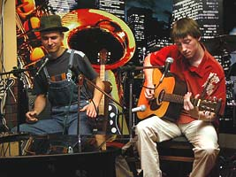
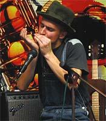
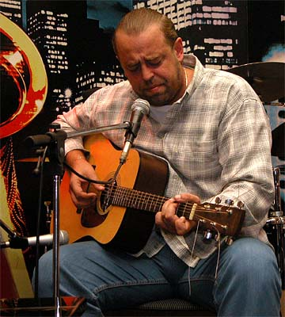
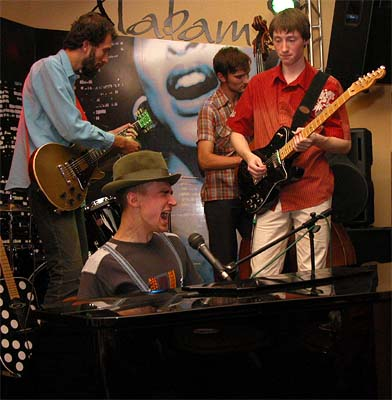
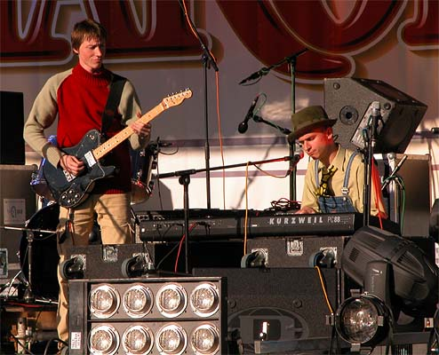
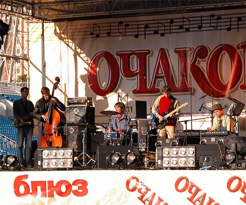

Творчество коллектива ориентировано на акустическое исполнение блюзовой архаики. Соответственно репертуар основан на кавер-версиях всемирно-известных сочинений таких блюзовых столпов как J.L.Hooker, Howlin Wolf, Robert Johnson, Willie Dixon, Buddy Guy и многих других. Весьма радостным является тот факт, что музыканты с самого начала не ограничили своё творчество исполнением кавер-версий "вечнозелёных" блюзов. Уже в первом альбоме "Svet & Al" "Hookin' the Blues", органично вписавшись между trad-композициями и сочинениями John'a Lee Hooker'a присутствует авторский блюз, написанный вокалистом-гармошечником Svet'ом. Опыт создания собственных композиций и текстов получил достойное продолжение и в альбомах, записанных в рамках проекта с Валерием "Big Val'ом" Прохожим.
Игра этого белорусского проекта уникальна по своей природе. Не всякий современный белый блюзмен решился бы определить концепцию своего творчества как "акустическое, англоязычное исполнение архаичных блюзов". Тем более не каждый смог бы добиться в своей игре такой созвучности традиционному блюзу! Стиль, избранный минскими музыкантами, наполнен той образностью, которой отличались аутентичные образцы данного жанра. Говоря проще, им удалось уловить манеру блюзменов-архаиков, тонко прочувствовать и передать в собственных сочинениях суть "черного" акустического блюза: от лабильных derty-тонов до полуразговорной манеры интонирования в пении, столь характерной афро-американской музыке.
В их музыке нет места "коммерческому" звучанию, которым нередко грешат белые исполнители. Образ, созданный белорусским трио успешно сочетает опыт легендарных отцов-блюза и личное видение жанра, его глубокое понимание. В результате полученной ассимиляции родился совершенно новый и удивительно цельный организм, поражающий своей естественностью и слаженностью.
Владение музыкантами несколькими инструментами позволяют участникам коллектива индивидуально подходить к каждой композиции: варьировать количество исполнителей и инструменты. Такая динамичность играет не последнюю роль во время "живых" выступлений группы. Концерты "Big Val, Svet & Al" отличаются специфической зрелищностью, которая производит сильное впечатление и вызывает искренне-восторженные эмоции у поклонников дельта-блюза.
Участники проекта:

Svet (Свет) - Святослав - губная гармоника, гитара, фортепиано. Своеобразный вокал и эксцентричное исполнительство - серьёзные козыри этого человека-оркестра, беспроигрышно работающие на созданный им исключительно-художественный образ эдакого "хуки-кучи мена".Al (Эл) - Алексей. В дуэте - гитара, слайд-гитара, а также самобытный вокал. Яркий исполнитель, прекрасно чувствующий тонкости акустического звучания и владеющий специфическими приёмами игры, характерными для "ранних" блюзов.

Big Val (Биг Вэл) - Валерий Прохожий - действительно BIG, а кроме того, самый старший из участников проекта. Обладатель редкого "чёрного" тембра голоса и искусный гитарист. Его исполнение как нельзя более достоверно передаёт всю блюзовую "соль", а также малейшие оттенки настроения блюза.Двое из участников проекта (Svet & Al) помимо всего играют в составе буги-бенда (Svet & Al Boggie Band). А Валерий "Big Val" Прохожий, являясь профессиональным переводчиком и приверженцем архаики, сыграл важную роль в создании нынешнего уникального трио. Несмотря на свою недолгую историю, коллектив уже достиг явных успехов. Записано несколько интересных альбомов, проходят гастроли в различных городах Беларуси и за рубежом. В мае 2003 года группа триумфально гастролировала в Польше (Рава Мазовецка), заняв первое место в конкурсе на международном блюзовом фестивале, собравшем участников из Чехии, Словакии, Германии, Франции и других стран.
Один из участников чешского коллектива "Hoochie Coochie Band", занявшего 2-е место на том же фестивале, сказал: "Счастливое обстоятельство, что мы встретили здесь "Big Val, Svet & Al", а несчастливое - то, что они-то как раз и заняли первое место".
Также группа принимает активное участие в клубных и корпоративных мероприятиях Минска. Нередко им в этом помогают участники других известных белорусских коллективов: Артем Гаврюшин (контрабас), Сергей "Гном" Котляров (ударные), Павел Аракелян и Ирина Харитончик (саксофоны), Артемий Кричевский (гитара, гр. «Spoonfull»), Татьяна «Мюсля» Тащенко (перкуссия), Андрей "Фил" Филатов (барабаны, гр. "Mojo Blues").
На данный момент группа является, пожалуй, одним из уникальных явлений в блюзовых кругах как Беларуси, так и за её пределами.
Вопрос о специальном музыкальном образовании вызвал у музыкантов здоровый смех.
Эл: Свет закончил институт, но не музыкальный (медицинский - прим. авт.)
Свет: Я год отучился в лицее при консерватории по классу фортепиано, но это мне только мешает, поэтому "дужу" на гармошке.
Эл: Свет играет на всём, кроме бас-гитары (с ней как-то не сложилось) и то, наверное, потому что не сосредоточился на этом серьёзно. Если бы он захотел ….

Как вы познакомились?Эл: Я играл с друзьями в составе студенческой группы. Исполняли каверы группы Led Zeppelin, но был необходим человек, способный петь очень высоким голосом, как Роберт Плант. И мы искали вокалиста.
Свет: а я пел БГ. (Борис Гребенщиков - прим. авт.)
Эл: Свет дал объявление "Вокалист ищет группу". Мы ему позвонили. Он пришёл и начал играть какие-то бардовские песни. Сначала мы были не в восторге, но потом решили, что сможем его "перековать" и он начнёт петь Led Zeppelin. Он пришёл к нам на ОДНУ репетицию…
Свет: И горжусь этим!…(смеётся)
Эл: Потом он исчез. Через пол года мы встретились с ним случайно в клубе на вечеринке, посвящённой дню рождения Джимми Хендрикса. И с тех пор мы не расстаёмся!
И тогда вы решили играть блюз?
Эл: Нет. Какое-то время мы слушали и играли разную музыку на русском и на английском языке.
Свет: Потом Al уехал на каникулы в Штаты и привёз оттуда один диск Хаулин Вульфа "His Best" и три гармошки. Тогда мы начали играть блюз.
Эл: В какой-то момент решили, что можно играть вдвоём - оказалось, это очень даже хорошо.
А как началось ваше сотрудничество с Валерием?
Эл: Выступление, на котором Val услышал Svet'а, тоже очень странно получилось. У нас тогда ещё не было готовой программы. Отрепетировали три песни и играли их для себя. Вдруг Svet говорит: "Будет блюзовый фестиваль "Блюз живёт в Минске" давай сходим - сыграем?"
Свет: А ты сказал: "Иди, а я буду работать".
Эл: На самом деле я в футбол играл …
Свет: и я пошёл один.
Эл: После концерта к Svet'у подошёл один гитарист и сказал: "Зажигаешь как Хукер", и пригласил выступить на фестивале в клубе "Аквариум". Мы пошли туда вдвоём и случайно познакомились с Val'ом.
Биг Вэл: Я раньше играл просто для себя. Как-то раз оказался на концерте, где играл Svet. После выступления поймал его на лестнице и говорю: "Классно играете, супер! Только вот чёрного вокала вам не хватает. Я умею!".
Эл: Мы немного сомневались, но решили сходить к нему домой, чтобы послушать. Оказалось он так классно играет кантри-блюз - просто гипноз.
У вас различный опыт исполнения блюзов. Это сказывается в ходе репетиций?
Биг Вэл: Как-то сам собой сложился следующий принцип: мы все отдельно разучиваем какую-либо песню, и при встрече исполняем то, что получилось у каждого. Это всегда удивительно. Получается именно то, что и было нужно!
Эл: Так была записана пластинка "In My Kitchen". После первого же сыгранного дубля мы обалдели. Сначала даже не могли говорить. Затем все разом согласились, что больше ничего уже и не нужно выдумывать!"

Ваши "живые" выступления тоже складываются очень удачно. Первые же гастроли в Польше принесли вам первое место в конкурсной программе фестиваля! Можно поподробнее?Эл: На фестивале в Польше мы играли втроём (вместе с Val'ом), а вокруг нас собралась целая команда из трёх журналистов и телеоператора. Были представители белорусского радио, телевидения и прессы. Мы чувствовали большую ответственность. Если бы мы не выиграли, было бы ужасно стыдно.
Потом нас пригласили на белорусское радио. Мы играли "живьём" и записали диск "Оn Аir".
Расскажите о своих гастролях в России. Ваш приезд в Москву оказался несколько внезапным. С чем это связано?
Эл: первоначально мы получили приглашение выступить во Владимире. Там была очень хорошая организация и играла масса заслуженных коллективов, которые уже много лет принимали участие в различных фестивалях. Московские организаторы смогли перенести дату планируемого концерта в столице и нам удалось успешно совместить оба выступления.
Следующим пунктом был Санкт-Петербург. Какие впечатления остались после питерского концерта?
Эл: Питер очень понравился. У нас было достаточно времени, чтобы погулять по городу, полюбоваться на разводные мосты. Такого раньше видеть не приходилось - потрясающее впечатление. И обстановка во время выступления порадовала теплотой, публика собралась очень отзывчивая. Хочется поблагодарить людей, которые организовали наши выступления в России и всех, кто пришёл на наши концерты!

Осень 2003 года "Big Val, Svet & Al" снова посетили столицу России, приняв участие в торжествах по случаю Дня города. В рамках фестиваля "Очаково-блюз", прошедшем в те дни на различных площадках Москвы, и на центральном мероприятии - гала-концерте на стадионе "Динамо" - минские музыканты выступили в двух ипостасях: проект "Big Val, Svet & Al" и "Svet & Al Boggie Band". Искушенная блюзовая общественность первопрестольной высоко оценила специфику и аутентичность белорусского бэнда, сойдясь во мнении, что коллективу сулит большой успех в будущем.Когда статья уже была готова, поступила информация, что Артемий Гаврюшин (контрабас) "доигрался" до звания полноправного участника коллектива "Big Val, Svet & Al"! И не смотря на то, что название осталось прежним, трио официально стало квартетом!
Мария Зотова
Официальный сайт группы svet-al.blues.ru
{kind=link}